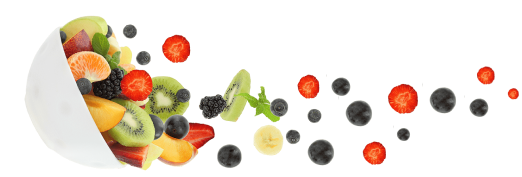

<section class="about">
    <!-- <div class="about-bg">
        
    </div> -->
    <div class="container">
        <div class="about__inner">
            <div class="about__img">
                
                
            </div>
            <div class="about__info">
                <h2 class="about__title title title-white">Permíteme presentarte a <span>Sonia</span></h2>
                <div class="about__descr">
                    <p>Sonia es la fundadora y creadora de <span>la Fresh Life Clinic</span>, donde ha ayudado a cientos
                        de personas
                        a perder peso y establecer una relación saludable con sus cuerpos y la comida.
                    </p>
                    <p>Obtuvo su diploma en dietética en Londres, se graduó en pedagogía en la PUC, realizó un posgrado
                        en nutrición deportiva y obesidad en la USP, se especializó en alimentación saludable en Harvard
                        y en la ciencia del bienestar en Yale.
                    </p>
                    <p>Con su estilo profundo y humorístico, Sonia se esfuerza por democratizar los conceptos clave de
                        una alimentación saludable y sostenible. Esto la llevó a crear el proyecto Fresh Life Clinic, el
                        cual proporciona conocimientos esenciales y actuales sobre la pérdida de peso de manera que las
                        personas puedan tomar decisiones mejores para sus vidas.</p>
                </div>
            </div>
        </div>
    </div>
</section>